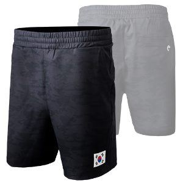
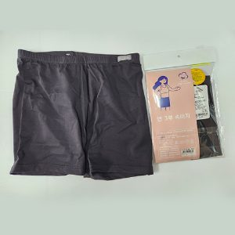
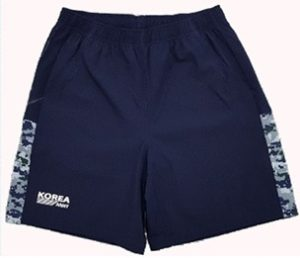

| 상품 | 군마트 | 쿠팡 | 차이 | |
|---|---|---|---|---|
| 네파 반바지 105 | 15,360원 | 39,900원 | -62% | |
| 네파 반바지 100호 150g | 15,360원 | 36,940원 | -58% | |
 | 네파 반바지 95 | 15,360원 | 34,900원 | -56% |
| 티엠씨코퍼레이션 이알씨 디지털반바지 105호 | 16,780원 | 18,800원 | -11% | |
 | 댑코리아 면3부속바지 95 | 5,020원 | 5,500원 | -9% |
 | 티엠씨코퍼레이션 이알씨 디지털반바지 100호 | 16,780원 | 18,350원 | -9% |
| 티엠씨코퍼레이션 이알씨 디지털반바지 95호 | 16,780원 | 18,070원 | -7% | |
| 댑코리아 면3부속바지 100 | 5,020원 | 4,410원 | +14% | |
반바지 말고 다른 것도
더 이상 직접 비교하지 마세요.
군마트 상품을 한곳에 모아 PX 가격과 온라인 가격을 쉽게 비교할 수 있습니다.

이게 실제 화면이에요. 상품을 누르면 바로 열립니다.
국방가족 분들이 조금이라도 편하게 군마트를 이용하셨으면 하는 마음으로 만들었습니다.
국방가족을 위한 작은 재능기부입니다.